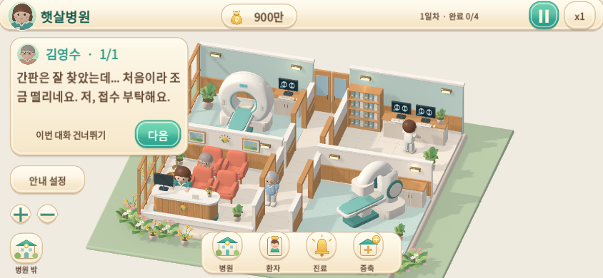
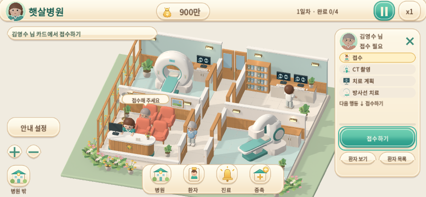
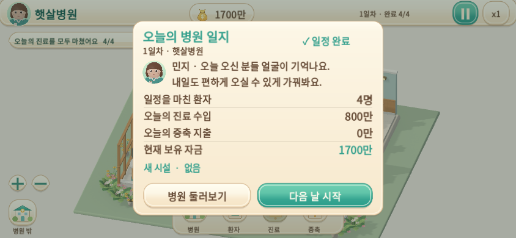

첫날의 작은 완성
짧은 첫 인사, 직접 여는 치료별관, 오늘의 병원 일지. 모두 실제 게임 엔진의 자동 입력 · 정상 1배속 영상입니다.
변경·저장 호환·검증·남은 요소 · Mac에서 직접 플레이 · 이전 버전 영상
인사 다음에는 직접 해보기
민지와 김영수의 짧은 대화 뒤 환자를 선택하고, 실제 버튼으로 접수합니다. 게임에는 대사 자동 넘김이나 읽기 제한이 없습니다.
우리 병원에 치료실이 하나 더
실제 예정지를 누르고 600만 가격과 효과를 확인합니다. 구매 성공 후 별관이 나타나며 내부의 두 치료실이 각각 환자를 받습니다.
첫 환자가 일정을 마친 정상 운영 체크포인트에서 시작합니다. 병원 밖에서는 기존 규칙대로 운영이 멈춥니다.
오늘의 병원 일지
모든 환자의 실제 귀가 후 수입 800만, 증축 지출 600만, 현재 자금 1100만을 구분해 확인하고 2일차를 시작합니다.
마지막 귀가 직전의 정상 운영 체크포인트입니다. 일지를 여는 동작은 추가 보상을 지급하지 않습니다.
844 × 390 실제 화면
엔진 창을 해당 크기로 실행한 캡처입니다. 휴대폰 실기기 캡처가 아닙니다.

선택과 접수는 서로 다른 행동입니다.

증축을 미룬 경우의 기록도 실제 금액을 사용합니다.

Godot 4.6.3 · Compatibility · Linux 소프트웨어 렌더러. Mac/iPhone 실기기 성능은 별도 미검증입니다.